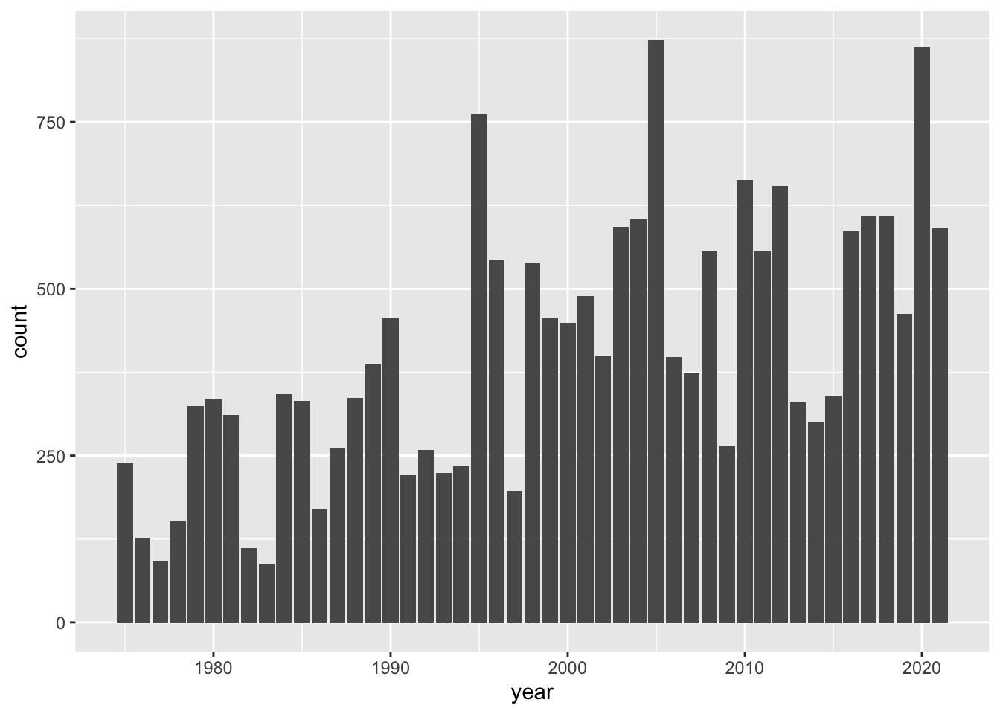

As we just saw, because storms is an object of class "tibble", when you type its name R displays the first 10 rows, which belong to storm Amy in 1975:
storms
# A tibble: 19,066 × 13
name year month day hour lat long status category wind pressure
<chr> <dbl> <dbl> <int> <dbl> <dbl> <dbl> <fct> <dbl> <int> <int>
1 Amy 1975 6 27 0 27.5 -79 tropical d… NA 25 1013
2 Amy 1975 6 27 6 28.5 -79 tropical d… NA 25 1013
3 Amy 1975 6 27 12 29.5 -79 tropical d… NA 25 1013
4 Amy 1975 6 27 18 30.5 -79 tropical d… NA 25 1013
5 Amy 1975 6 28 0 31.5 -78.8 tropical d… NA 25 1012
6 Amy 1975 6 28 6 32.4 -78.7 tropical d… NA 25 1012
7 Amy 1975 6 28 12 33.3 -78 tropical d… NA 25 1011
8 Amy 1975 6 28 18 34 -77 tropical d… NA 30 1006
9 Amy 1975 6 29 0 34.4 -75.8 tropical s… NA 35 1004
10 Amy 1975 6 29 6 34 -74.8 tropical s… NA 40 1002
# ℹ 19,056 more rows
# ℹ 2 more variables: tropicalstorm_force_diameter <int>,
# hurricane_force_diameter <int>
From this output, it is obvious that the data contains at least one storm from 1975. But what other year values are present in the data?
According to the manual documentation of storms ("dplyr" version 1.1.2):
"The data includes the positions and attributes of storms from 1975-2021"
In a more or less arbitrary way, let’s begin inspecting storms by focusing on column year.
7.1 Basic Inspection of Year
Let’s formalize our first exploratory question:
What years have the data been collected for?
To answer this question, we need to work with column year. There are several ways in R to manipulate a column from a tabular object. Using "dplyr", there are two basic kinds of functions to extract variables: pull() and select().
Extracting a column with dplyr functions “pull” and “select”
Let’s do a sanity check of years. We can use the function pull() that pulls or extracts an entire column. Because there are thousands of values in year, let’s also use unique() to find out the set of year values in the data. First we pull the year, and then we identify unique occurrences:
Can you notice the difference between pull() and select()? The difference is minor but important. Conceptually speaking, both functions return the same values. However, the format of their output is not the same. Observe that select() returns output in a tibble format. In contrast, the output of pull() is not in a tabular format but rather in a vector (i.e. contiguous set of values).
Interestingly, there is a third option that can be used to find the unique or distinct year values: using the function distinct()
Again, notice the tabular output returned by distinct().
7.1.1 Barplot of year values
Let’s keep using the values in column year to obtain our first visualization with "ggplot2" functions. You could certainly begin a visual exploration of other variables, but I think year is a good place to start because it’s a numeric variable, measured on a discrete scale, and this is a good candidate to use barcharts (the most popular type of graphic).
"ggplot2" comes with a large number of functions to create almost any type of chart. Luckily for us, it already comes with predefined functions to graph barcharts. The syntax may seem a bit scary for beginners, but you will see that it follows a logical structure. Here’s the code to make a barplot of year values:
# barchart of year valuesggplot(data = storms) +geom_bar(mapping =aes(x = year))

How does the previous command work?
First, we always call the ggplot() function, typically indicating the name of the table to be used with the data argument.
Then, we add more components, or layers, using the plus + operator.
In this case we are adding just one layer: a geom_bar() component which is the geometric object for bars.
To tell ggplot() that year is the column in data = storms to be used for the x-axis, we mapx = year inside the aes() function which stands for aesthetic mapping.
We should clarify that the meaning of “aesthetic” as used by "ggplot2" does not mean beautiful or pretty, instead it conserves its etymological meaning of perception. Simply put, aes() is the function that you use to tell ggplot() which variables of a data object will be mapped as visual attributes of graphical elements.
7.2 Basic inspection of month
Now that we have explored column year, we can move to the column month and perform a similar type of analysis. Using the same commands, all we have to do is change the name of the variable to month to see whether there are storms in all months:
unique(pull(storms, month))
[1] 6 7 8 9 10 11 5 12 4 1
In this case, it would be better if we sort() them:
sort(unique(pull(storms, month)))
[1] 1 4 5 6 7 8 9 10 11 12
Observe that not all months have recorded storms, this is the case for February (2) and March (3). Is this something to be concerned about? How is it possible that there are no recorded data for February and March? For the inexperience analyst, asking this type of questions is fundamental. As a data scientist, you will be working with data sets for which you are not necessarily an expert in that particular field of application. Since you will also be interacting with some type of experts, you should ask them as many questions as possible to clarify your understanding of the data and its context.
The answer for not having storms in February and March is because these months have to do with the end of Winter and beginning of Spring in the North Atlantic, which is a period of time where tropical systems don’t get formed. In fact, Spring months such as April and May also don’t tend to be typical months for hurricanes. So a further thing to explore could involve computing the number of storms in April and May.
7.3 Exercises
1) Use pull(), and unique() to inspect the values in column day
Show answer
unique(pull(storms, day))
2) Try to use sort() in order to arrange the unique values of day
Show answer
sort(unique(pull(storms, day)))
3) Does the unique day values make sense? Are there days for which there seem to be no recorded storm data?
Show answer
# there are no days for which there is no recorded data
4) Use "ggplot2" functions to graph a barchart for the values in columns day.
6) Look at the cheatsheet for ggplot and locate the information for geom_bar(). With the barchart of month values, find out how to specify: border color, fill color. Also, see what happens when you specify alpha = 0.5. Also, find how to use scale_x_continuous() to adjust the breaks argument so that the x-axis scale displays numbers 1, 2, …, 12
7) Look at the cheatsheet for ggplot and locate the information for background Themes, e.g. theme_bw(). With the barchart of month values, find out how to add theme theme_classic() to the previous barchart.